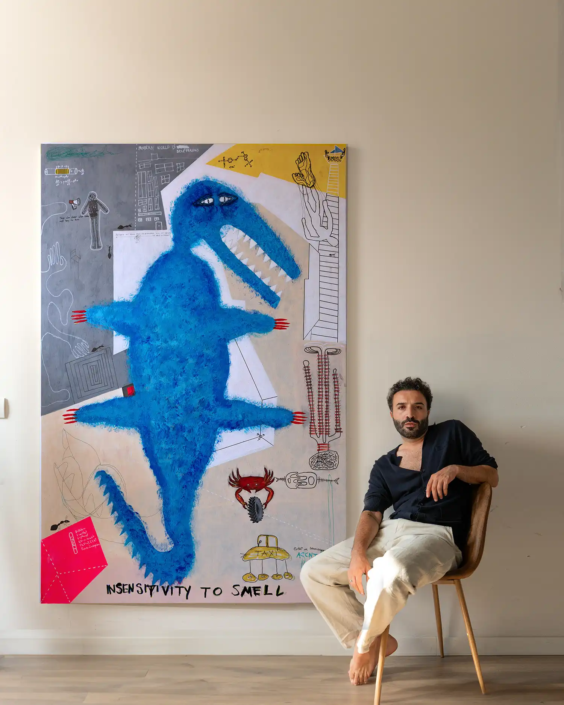

About
Ümit Sural is a Barcelona-Paris based multidisciplinary artist.
Born in Istanbul, Sural works across painting, sculpture, photography and moving image. His practice moves between figuration and abstraction, often exploring the tension between presence and absence, visibility and withdrawal through a reduced and psychologically charged visual language.
After studying computer science, 3D animation and post-production, he worked in filmmaking and acting before fully dedicating himself to visual arts. This technical background continues to inform his interdisciplinary approach, allowing him to move fluidly between traditional and digital mediums — from charcoal drawings and acrylic paintings to sculptural objects and digital image-making.
Across his work, Sural frequently examines distorted bodily forms, systems of attention, emotional distance and fragmented perception. His practice reflects on themes of control, identity, collective behaviour and psychological tension while maintaining an introspective and ambiguous visual vocabulary.
He currently lives and works in Barcelona & Paris.